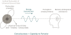

Original Theory
A Unified Hypothesis of
Creation and Consciousness
Perception Enabled by a Universal Reference as the Source of Consciousness
Nandakumar Sasidharan Rajalekshmi · Zürich · 2024–2025
Abstract
This hypothesis proposes that consciousness — understood as the fundamental capacity to perceive — emerges from the structure of reality itself, not solely from biological neural complexity. The universe exists in a ground state characterised by stillness, timelessness, and unboundedness — analogous to the quantum vacuum. Creation exists as cyclical fluctuations in this ground state. Perception, as a form of measurement, requires a zero-reference point; and this universal ground state serves precisely that function. Every point in the universe therefore has the potential to perceive, respond, and participate in the evolutionary unfolding of creation.
Core Propositions
Five Foundational Claims
Proposition I
The Universal Ground State
The universe rests on — and periodically returns to — a ground state characterised by absolute stillness, timelessness, and unboundedness. This state is not an absence of reality but its purest form, analogous to the quantum vacuum: a state of minimum excitation containing all potential. Creation is the cyclical fluctuation from this ground state and eventual return to it.
Scientific parallel: Quantum vacuum state · Zero-point energy · Cosmological ground state · Big Bang / Big Crunch cosmologies.
Proposition II
Consciousness as the Capacity to Perceive
Consciousness is not a property of matter but the fundamental capacity for perception — the ability for any part of the universe to register the state of another part. This is not an emergent property exclusive to biological brains; it is a structural feature of reality that varies in complexity and richness across different substrates.
Scientific parallel: Integrated Information Theory (IIT) · Panpsychism · Quantum measurement theory.
Proposition III
Perception as Measurement Requiring a Zero Reference
Any measurement — physical or experiential — requires a reference point: a zero against which deviation is registered. In physics, the ground state provides this reference for energy measurements. In consciousness, the universal ground state (experienced as pure awareness in deep meditative states) serves as the zero reference from which all perceptual content is distinguished. Without this background of pure awareness, no foreground experience is possible.
Scientific parallel: Signal detection theory · Background subtraction in neuroimaging · Reference frame invariance in physics.
Proposition IV
Universal Perceptive Capacity
Because the universal ground state is accessible at every point in spacetime — not localized to any privileged region — every point in the universe has access to the zero-reference required for perception. This does not mean every structure perceives with equal richness; it means that the precondition for perception is universally present. Complexity of organisation determines richness of perception; the capacity is foundational.
Scientific parallel: Decoherence and environmental entanglement · Adaptive systems in biology · Non-equilibrium thermodynamics and response.
Proposition V
Perception → Response → Evolution
The ability to perceive entails the ability to respond. Response to perceived states is the engine of evolution at every scale — from the molecular (biochemical signalling) to the cosmic (gravitational interaction and large-scale structure formation). Consciousness, in this view, is not a late-arriving passenger in an otherwise mechanical universe; it is the generative principle driving its increasing complexity and self-organisation.
Scientific parallel: Autopoiesis · Self-organising criticality · Evolutionary biology and adaptive response.
Conceptual Map
The Structure of the Hypothesis

Fig. 1 — Conceptual structure of the Unified Hypothesis
Scientific Dialogue
Testability & Future Alignment
A hypothesis that cannot be tested is philosophy, not science. While this theory currently operates at a conceptual level, the following directions offer pathways toward empirical engagement:
Neuroscience
If the ground-state reference theory is correct, deep meditative states (characterised by minimal perceptual content but maximal awareness) should show a distinct neural signature — high coherence with low signal variance — testable via EEG and fMRI.
Physics
The analogy between universal ground state and quantum vacuum invites exploration of whether quantum measurement and collapse can be reinterpreted within a consciousness-as-perception framework, building on work by Penrose, Stapp, and others.
Information Theory
Perception-as-measurement can be formalised: the information content of a percept relative to the zero reference follows Shannon entropy; the universal reference provides a natural baseline for defining minimal description length of conscious states.
AI & Neuromorphic Computing
If intelligence requires a stable reference state, hardware architectures with explicit ground-state mechanisms (analogous to reset states in PCM devices) may exhibit richer adaptive behaviour than those without — a testable engineering prediction.
An Open Inquiry
This hypothesis is a living document, open to revision, extension, and dialogue. I welcome engagement from physicists, neuroscientists, philosophers, and contemplatives.